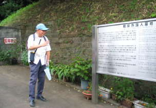
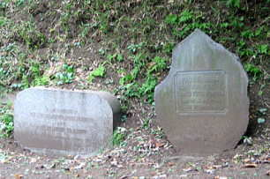
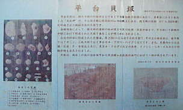
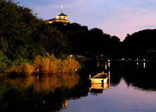
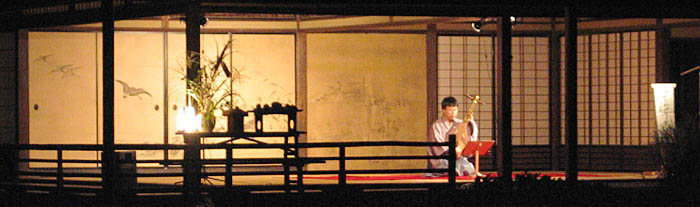

| 見たい項目をクリックして下さい | |||||||||
|
| 行 事 記 録 （詳 細 - １１） |
|
雲の上のお月様 —三渓園観月会—
|
| 掲載日 ０３−９−２７ |
|
行 事 名 |
三渓園観月会 |
|
研 究 部 会 |
横浜探訪の会 |
|
実 施 日 |
０３年９月１４日（日） １５：３０〜１９：００ |
|
実 施 場 所 |
ＪＲ山手駅に集合、付近の史跡を探訪しながら、三渓園の観月会へ |
|
参 加 者 |
会員７名（小方、柴田、須田、竹内、坪井、中村、西田） |
| 記 録 | 中村 理 |
|
概 要 |
ＪＲ山手駅→根岸外人墓地→仲尾台公園→清水寺→豆口台公園→池袋公園→平台貝塚→和田山→本牧山頂公園→本牧神社→本牧三の谷→三渓園内苑（琵琶演奏鑑賞）
|
|
●アポロ１１号が「静かな海」に着陸して３４年がたちました。それでも月への憧れがしぼむ事はありません。 |
 | |
| 根岸外国人墓地 | ||
|  | ||
| 関東大震災で亡くなった米国領事夫妻の墓標 | ||
|  | ||
| 平台貝塚の説明パネルに描かれた 幾種類もの貝殻の写真 |
||
|  | ||
| 三渓園外苑の大池に映える旧燈明寺三重塔 | ||
|  | ||
| 三渓園内苑の臨春閣で演じられた琵琶の弾き語り | ||
| 記録の一覧表 に戻る |